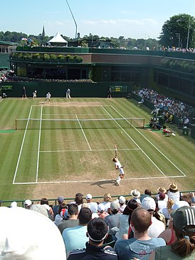
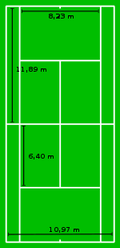

Большой Теннис
Те́ннис (англ. tennis) или большо́й теннис — вид спорта, в котором соперничают либо два игрока («одиночная игра»), либо две команды, состоящие из двух игроков («парная игра»).
Задачей соперников — тенниси́ста или тенниси́стки — является при помощи ракеток отправлять мяч на сторону соперника так, чтобы тот не смог его отразить, не более чем после первого падения мяча на игровом поле на половине соперника.
У современного тенниса в английском языке есть официальное название ла́ун-теннис (англ. lawn [lɔːn] «лужайка») для отличия от реал-тенниса (или жё-де-пом во французском варианте названия) — более старой разновидности, в которую играют в закрытых помещениях и на совершенно другом типе корта.
Теннис является олимпийским видом спорта.
История
Прямым предшественником современного тенниса считается игра в помещениях, до конца XIX века носившая то же название, а в настоящее время известная как реал-теннис, корт-теннис или жё-де-пом (фр. jeu de paume, в буквальном переводе игра ладонью). Жё-де-пом, в который могли играть одновременно до 12 человек, появился в XI веке, по-видимому, в монастырях. Вначале в этой игре, как и в ручной пелоте, мяч отбивали рукой, затем появились перчатки, биты и, наконец, в XVI веке, ракетки и сетка. На это же время приходится пик популярности жё-де-пома, в который играли французские, английские и испанские короли того времени.
Одним из наиболее известных упоминаний тенниса в средневековой литературе является эпизод в исторической хронике Шекспира «Генрих V», где французский дофин в насмешку присылает молодому английскому королю бочонок теннисных мячей.
Инвентарь
Корт
В теннис играют на прямоугольной площадке с ровной поверхностью и нанесённой разметкой — корте. Посередине корта натянута сетка, которая проходит по всей ширине, параллельно задним линиям, и разделяет корт на две равные половины. Длина корта — 23,77 м, ширина — 8,23 м (для одиночной игры) или 10,97 м для парной игры. Линии вдоль коротких сторон корта называются задние линии, вдоль длинных сторон — боковые линии. За границами разметки — дополнительное пространство для перемещения игроков. На корте также обозначаются зоны подачи при помощи линий подачи, параллельных задним линиям и сетке, расположенных на расстоянии 7 ярдов (6,40 м) от сетки и проведённых только между боковыми линиями для одиночной игры, а также центральной линии подачи, проведённой посередине корта параллельно боковым линиям и между линиями подачи. Центральная линия подачи отображается также на сетке при помощи вертикальной белой полосы, натянутой от поверхности корта до верхнего края сетки. На задних линиях наносится короткая отметка, обозначающая их середину. Все нанесённые на площадке линии являются частью корта. Мяч, попавший или едва задевший линию, тоже засчитывается. Таким образом, внешние края линий являются границей корта.
Ракетка
Для нанесения ударов по мячу игрок использует ракетку, которая состоит из рукоятки и округлого обода с натянутыми струнами. Струнная поверхность используется для ударов по мячу. Обод для ракеток изначально изготавливался из дерева, в настоящее время — из сложных композитов, состоящих из керамики, углеволокна и металлов.
Турниры
Существует ряд показательных турниров, проводимых, как правило, в теннисном межсезонье (ноябрь — январь). Среди ныне существующих показательных турниров можно выделить:
- AAMI Classic
- Кубок Хопмана - не проводится с 2020 года
- Мировой теннисный чемпионат в Абу-Даби
- Suzuki Warsaw Masters
- Женский выставочный турнир в Сингапуре
- Masters France
- Открытый чемпионат Ле-Туке
- Кубок Лейвера
Теннис на летних Олимпийских играх 2012
Впервые с 1968 года в программу Игр был включён турнир смешанных пар (медали в этом разряде разыгрывались впервые с 1924 года).
В Лондоне выступали чемпионы Игр 2008 года: швейцарцы Роджер Федерер и Станислас Вавринка (мужской парный разряд), американки Серена Уильямс и Винус Уильямс (женский парный разряд). Чемпионка Олимпийских игр 2008 года в женском одиночном разряде Елена Дементьева завершила карьеру в конце 2010 года и не выступала в Лондоне, а обладатель аналогичного титула у мужчин — испанец Рафаэль Надаль — пропустил игры из-за обострения застарелых травм коленей.
Общий зачёт
| Место | Страна | Золото | Серебро | Бронза | Всего |
|---|---|---|---|---|---|
| 1 | США | 3 | 0 | 1 | 4 |
| 2 | Великобритания | 1 | 1 | 0 | 2 |
| 3 | Белоруссия | 1 | 0 | 1 | 2 |
| 4 | Россия | 0 | 1 | 1 | 2 |
| 4 | Франция | 0 | 1 | 1 | 2 |
| 6 | Чехия | 0 | 1 | 0 | 1 |
| 6 | Швейцария | 0 | 1 | 0 | 1 |
| 8 | Аргентина | 0 | 0 | 1 | 1 |